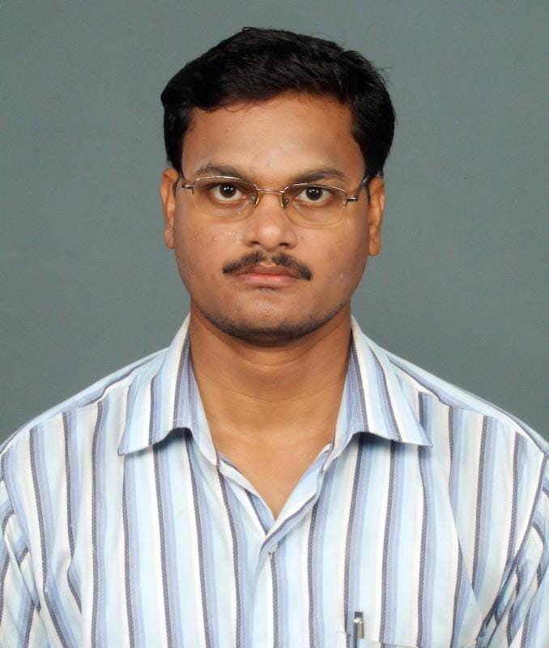

Head of the School

Dr. Ranjan Kumar Dash (Professor)
Head of the School

Dr. Sudhansu Sekhar Sahoo (Associate Professor, Mechanical)
Head of the School

Prof. Lokanath Tripathy (Professor)
Head of the School

Prof. Madhab Chandra Tripathy (Associate Professor, E & I Engg.)
Head of the School

Dr. Asimananda Khandual (Professor)
Head of the School

Dr. Bijnyan Ranjan Das (Professor, Chemistry)
Associate Head
Dr. Babita Ojha (Associate Professor, Physics)
Associate Head
Dr. Minakshi Prasad Mishra (Assistant Professor ,English)
Associate Head

Dr. Prasana Kumar Mishra (Assistant Professor, Mathematics)
Head of the School

Dr. Ranjan Kumar Pradhan (Associate Professor)
Head of the School

Prof. Sabita Dash (Associate Professor)
Associate Head
Mr. Sangram Mohanty (Asst. Professor, Architecture)
Associate Head

Mr. Bhabani Sankar Sa (Asst. Professor, Planning)